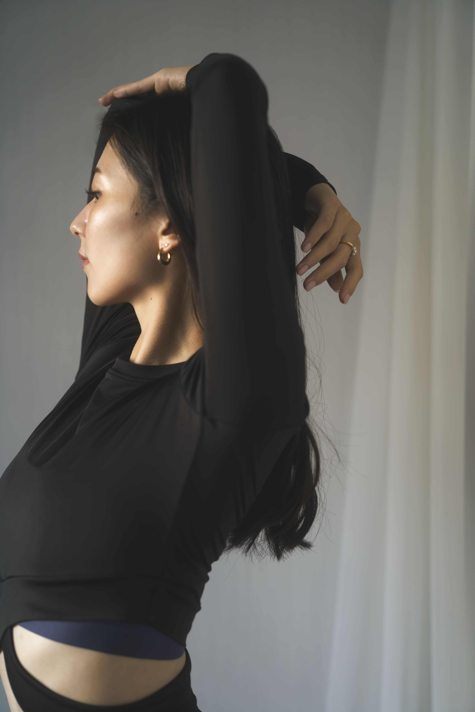
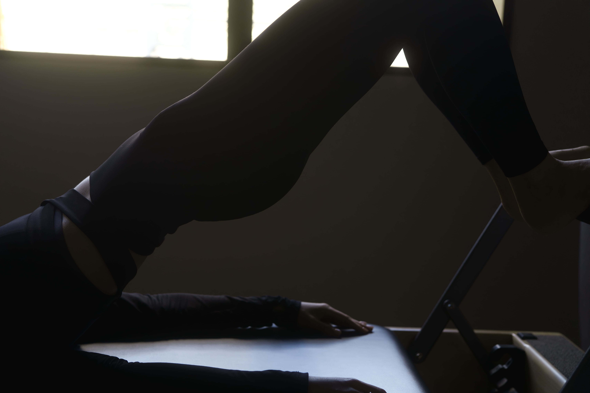
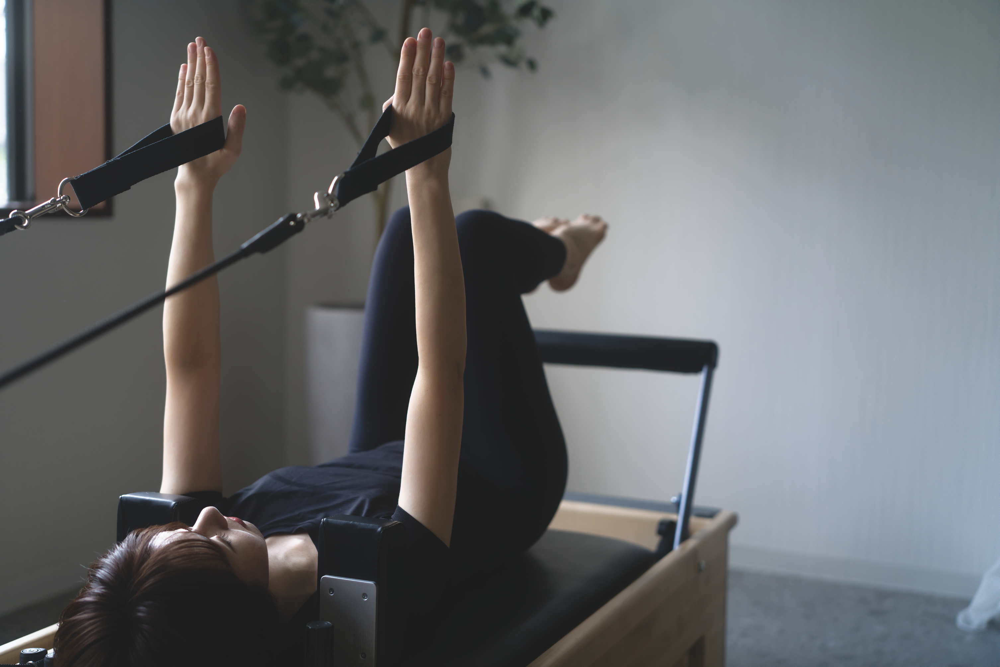
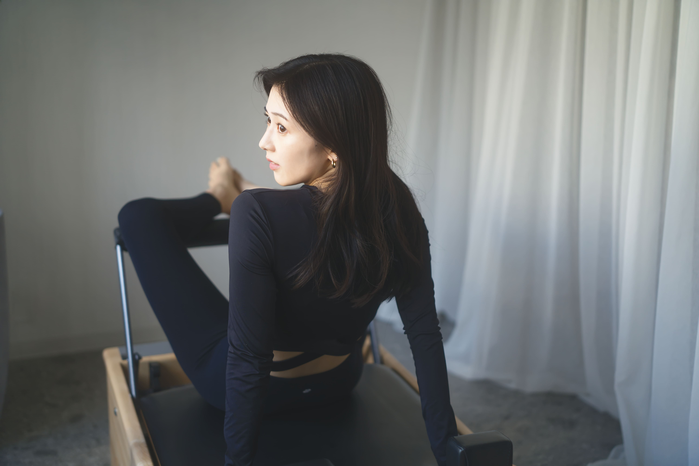
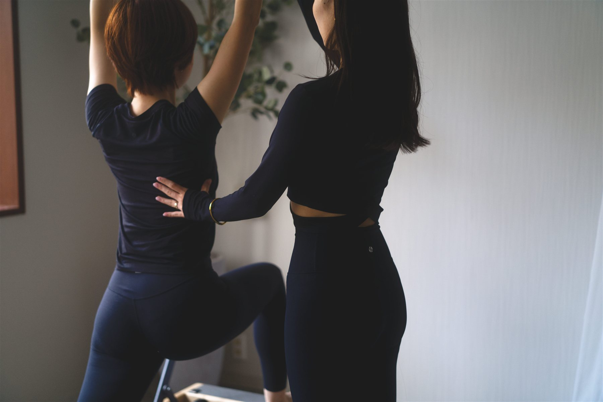
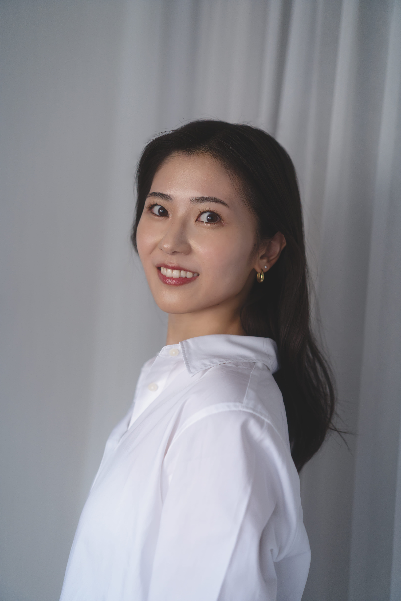
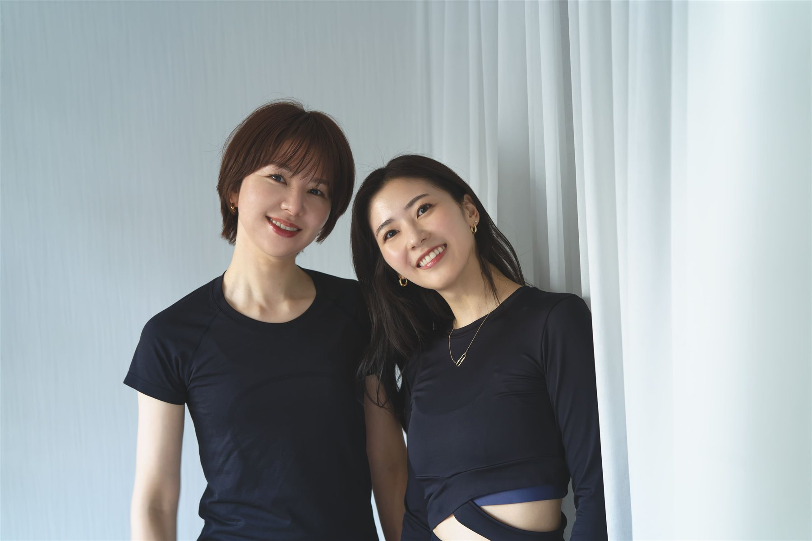

駅徒歩1分の通いやすさ
忙しい日でも通いやすい、
駅近の好立地。

はじめての方も安心。60分の無料体験
姿勢から、呼吸から、自分を整えて。
自分らしく軽やかな毎日へ。
女性専用・マシンピラティス 溜池山王駅 徒歩1分
整える。
巡る。
わたしらしく、
美しく。MayroPILATES STUDIO
ピラティスは、ただ鍛えるだけではなく、
姿勢・呼吸・骨盤・体幹を整えながら、
しなやかに動ける身体へ導くメソッドです。

背骨を本来の位置へ導き、
美しい立ち姿へ。

身体の土台を整え、
ヒップラインや下半身を支える。

表面だけではなく、
内側からしなやかに支える。

深くなめらかな呼吸を整え、
心と身体をリラックス。
忙しい日でも通いやすい、
駅近の好立地。
周りを気にせず、
自分の身体とゆっくり向き合える空間。
女性専用だから、リラックスして
レッスンを受けられます。
※男性はご紹介の方のみご利用いただけます。
身体の悩みや状態に合わせて、
あなただけのレッスンをご提案。

あなたのペースに合わせた通い方を。
月額¥10,000
税込
月額¥18,000
税込
月額¥32,000
税込
1回¥11,000
税込
料金はすべて税込です。ご入会・プランについては、体験後のカウンセリングでご案内します。
はじめての方でも安心。まずは60分の無料体験から！
かんたんな4ステップで、気軽にご体験いただけます。
 01
01Webから簡単に
ご予約いただけます。
 02
02お悩みや目標を
丁寧にヒアリング。

03インストラクターが
やさしくサポート。
 04
04今後の通い方やプランを
ご案内します。
女性インストラクターが、
あなたの「なりたい」に寄り添います。

クラシックバレエ、客室乗務員の経験を経て、インストラクターとして活動しています。
病院やクリニック、保育園での看護師経験を持つインストラクターです。
はじめての一歩を、安心して。
もちろん大丈夫です。マンツーマンで一人ひとりの身体の状態や運動経験に合わせて進めるので、初めての方も安心してご参加いただけます。
大丈夫です。柔軟性や身体の状態に合わせて、無理のない範囲でレッスンを行います。身体が硬い方にもおすすめです。
動きやすい服装でお越しください。足元は、靴下または裸足で大丈夫です。
Mayroは女性専用のプライベートスタジオです。男性はご紹介の方のみご利用いただけます。
Webから24時間いつでもご予約いただけます。ご自身の予定に合わせて、空いている日時から簡単にご予約いただけます。

YOUR FIRST STEP
はじめての方も安心｜60分の無料体験
無料体験を予約する